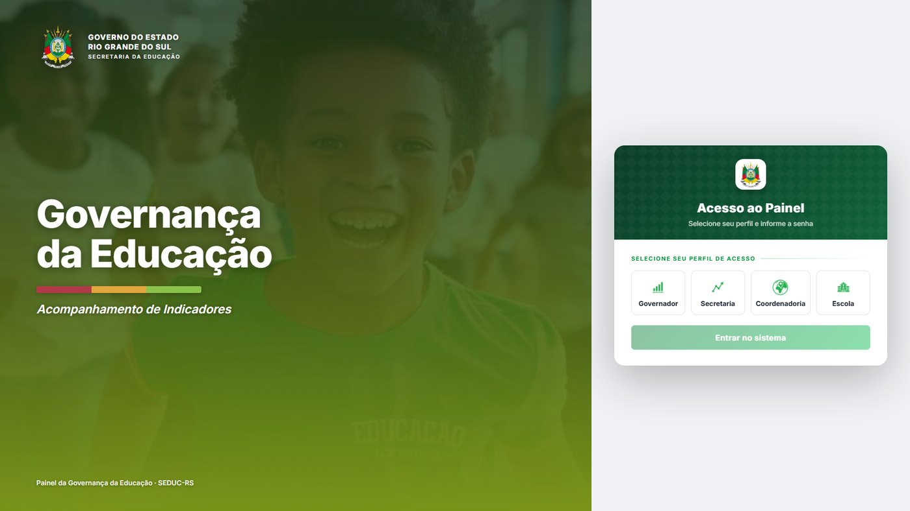
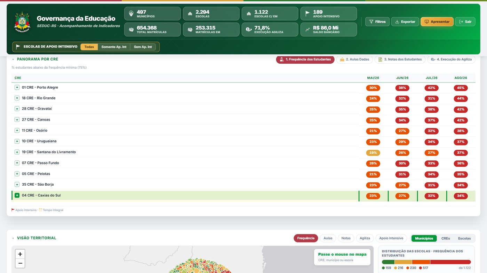
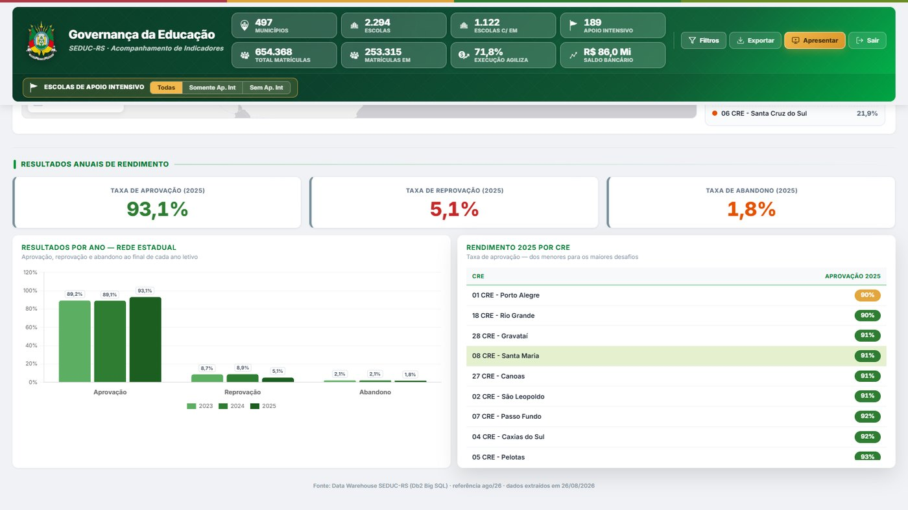

Contexto e Problema
O contrato UNESCO ED00585/2026 pede painéis gerenciais para o uso de evidências na decisão da SEDUC-RS. A Secretaria opera um ciclo mensal de governança, da reunião na escola até a reunião com o Governador, no marco da Agenda da Educação RS 2025–2035. O Censo e o IDEB descrevem a rede uma vez por ano. Para decidir no mês, a cúpula precisava de outro recorte: os alunos estão frequentando? as aulas estão sendo dadas? as notas estão em dia? o recurso Agiliza está sendo usado?
Esses dados existiam no diário de classe e no financeiro das escolas, mas não chegavam numa tela única, com recorte por perfil. O Governador, a Secretaria, a coordenadoria e a escola não podiam olhar o mesmo indicador no tamanho que lhes cabe.
Interface




Solução Desenvolvida
Como atividades executadas no contrato UNESCO ED00585/2026, destaca-se o painel gerencial que alimenta esse ciclo. Quatro perguntas, em linguagem de gestão:
- Frequência: quantos estudantes ficam abaixo de 75% de presença no mês, o sinal mais próximo de abandono
- Aulas dadas: se o que estava previsto na matriz curricular foi de fato registrado no diário
- Notas: quantos alunos acumulam três ou mais disciplinas abaixo da média
- Agiliza: se as escolas estão executando o recurso destinado à gestão da unidade
O acesso é autenticado. Governo e Secretaria veem a rede inteira; a coordenadoria, só as suas escolas; a escola, a própria unidade, com comparativo da regional. Há evolução no tempo, panorama por CRE, mapa e rendimento anual (aprovação, reprovação, abandono). O painel conversa com o Painel de Indicadores Educacionais: um é o retrato aberto da rede; este é o de decisão do mês.
Bases de Dados Utilizadas
- Diário de classe (frequência e aulas dadas)
- Notas do diário on-line, após conselho de classe
- Execução financeira do Agiliza (saldos das escolas)
- Rendimento anual da rede e recortes por Coordenadoria Regional
Tecnologias Utilizadas
Resultados e Impacto
O Governador e a SEDUC passaram a ter um instrumento único para a reunião mensal de governança: os mesmos quatro indicadores, da escola ao gabinete. Cada perfil vê só o que lhe cabe. A tela deixa visível o que o Censo não alcança no curto prazo (presença, aula dada, nota e execução de recurso) e liga isso ao rendimento anual da rede.